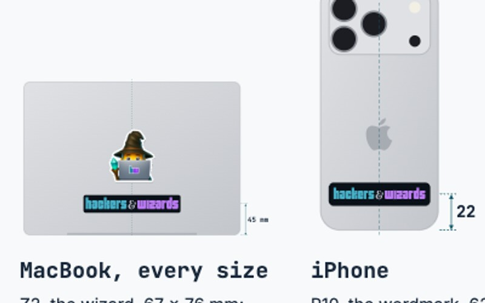

Commit e07f922. Ganze Seite, headless Chrome for Testing 156, vorher und nachher auf demselben Stand der Brand-Dateien.
| Ansicht | 1440 px | 500 px |
|---|---|---|
| Übersicht | 0 | 0 |
| Colours, Type, Tokens | 0 | nicht gemessen |
| Logos | 0 | 0 |
| Elements | 0 | 0 |
| Applications | 0 | 976 (MacBook-Wizard, 36 x 41 px) |
| Pressekit | 0 oder 29.023 | nicht gemessen |
Pressekit: Dieselbe Seite gegen sich selbst ergibt in 2 von 4 Läufen ebenfalls 29.023. Das ist das Dekodieren der Fotos, keine Änderung. Applications bei 500 px: Der Wizard auf dem MacBook kommt jetzt aus einer Datei statt aus Base64 im HTML, und Chrome skaliert ihn dabei etwas anders. Die Abweichung pro Farbkanal liegt bei höchstens 50 von 255.
